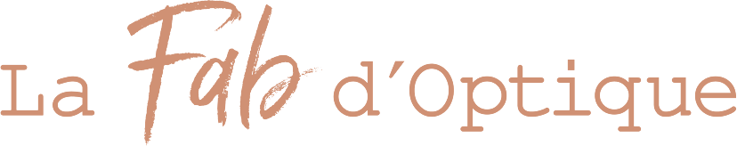
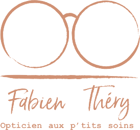

Griffes
- Moleskine
- Ray-Ban
- Nike
- Carven
- Emporio Armani
- Hugo Boss
- Givenchy
- Longchamp
- Karl Lagerfeld
- David Beckham
- Lacoste
- Les triplés

PRENDRE RENDEZ-VOUSLA FAB’ D’OPTIQUE · ÉPINAL
Fabien Thery · Opticien visagiste à Épinal.
Un lieu, une expertise, et des montures choisies pour vous.
L’ART DE LA MONTURE
Des montures pensées pour votre regard, jusque dans les finitions.
UN STYLE QUI VOUS RESSEMBLE
Une sélection de montures qui révèle votre personnalité.
UNE SÉLECTION AVEC DU CARACTÈRE
Des marques choisies pour leurs créations et leurs signatures visuelles.
NOS VERRES

LE SENS DU REGARDVOTRE OPTICIEN À ÉPINAL
Fabien, votre opticien visagiste est ravi de vous accueillir et vous accompagner dans le choix de toutes vos lunettes de vue optique, solaires à la vue.
Chic, modes, intemporelles ou personnalisées, toutes vos lunettes vous attendent.
Spécialiste basse vision et lentilles de contact, je ferai toujours de mon mieux pour rendre le monde plus clair.
Venez me retrouver dans votre boutique chic et moderne place du marché couvert à Epinal centre.
Je vous accueillerai idéalement sur rendez-vous dans les meilleures conditions pour sublimer votre regard et optimiser votre vision du monde.
Chaque expérience est unique. Partagez la vôtre et aidez d’autres personnes à choisir leur opticien à Épinal.
Note et nombre d’avis relevés le 29 octobre 2026. Les évaluations actuelles sont consultables sur Google.
La rédaction et la publication des avis s’effectuent sur Google, avec votre compte Google.
LES RENDEZ-VOUS À LA FAB’
Une boutique au cœur d’Épinal. Venez découvrir nos montures et profiter d’un accompagnement personnalisé.
Pour votre confort, nous vous invitons à prendre rendez-vous avant votre visite.
VOTRE NOUVELLE PERSPECTIVE COMMENCE ICI
13 rue François Blaudez, 88000 Épinal
lafabdoptique@gmail.com
NOUS RETROUVER
13 rue François Blaudez · 88000 Épinal